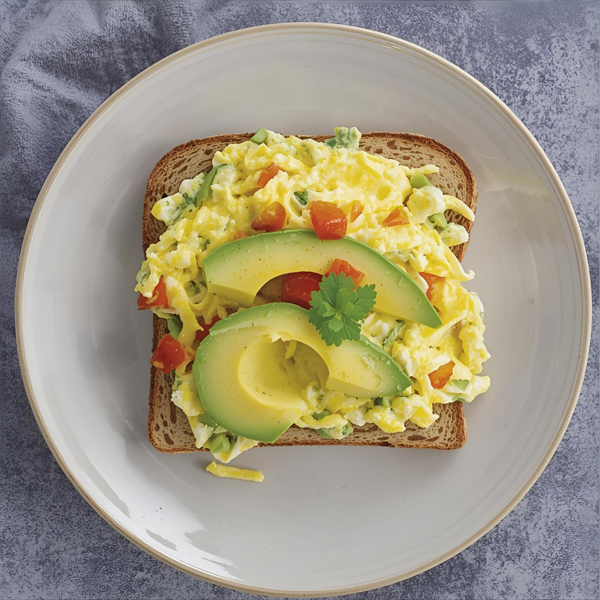

Home
Egg & Avocado Toast

- Makes 1 serving
- Preparation time: 10 minutes
- Ready in 15 minutes
Ingredients
- 2 slices regular bread
- 60g avocado
- 90g sliced tomato
- 40g chopped onion
- 40g chopped tomato
- 180g egg whites
- 1 tbsp minced garlic
- 1 tsp paprika
- 1 tsp lemon juice
- Salt & Pepper
Steps
- In medium bowl, mash up avocado making it into a paste. Add the chopped tomato, paprika, minced garlic, lemon juice, and salt&pepper, and mix.
- Place the bread slices in the toaster.
- Heat a pan over medium-high heat. Spray with cooking spray for 1 second. Cook the egg whites in the pan. Remove from the pan and divide the cooked egg whites on the open-face toast.
- Remove the toast from the toaster and place on a plate. Divide the avocado mash and place on both slices, adding sliced tomato on top.
- Serve as two open-face pieces of toast. Serve with fresh-squeezed lemon and cracked pepper if desired.